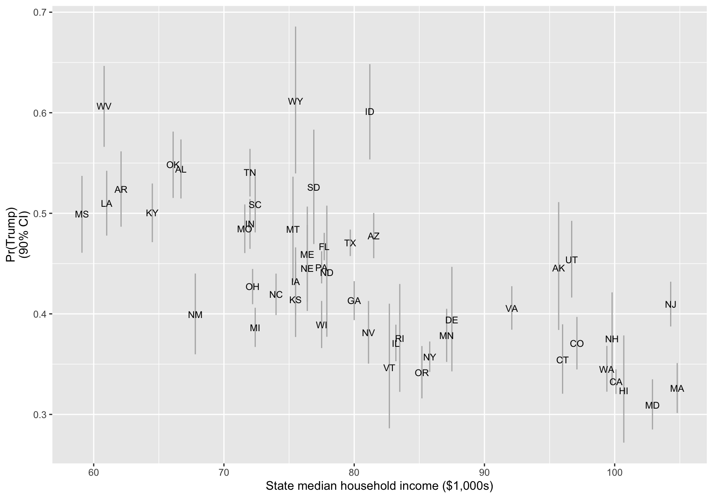
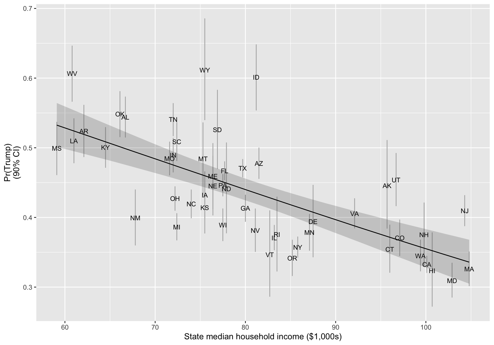

Instructor and TA copy: complete solutions, always open
Complete solutions are available. Work each exercise before you open one.
Exercise 1 Simulate and Recover; Ordered Logit
One important way to test and develop your understanding of statistical models and quantities of interest is to simulate a fake data set with known true quantity of interest (e.g., coefficients or first difference) and then recover that quantity of interest through your estimation procedure.
Do this for the ordered logit model in the notes. As your quantity of interest, use \(\Pr(y \geq 3)\) when income equals 1.5 and x2 equals "Label 1".
First, simulate a fake data set with known cutpoints, coefficients, and quantity of interest. Write this code yourself; adapt your Week 9 code. Notice that the linear predictor eta has no intercept. The cutpoints alpha take its place. In the solution, I use the values below, but you can choose different values if you like (keep 1.5 among the values of income).
n = 10,000.
income: −2.5, −1.5, −0.5, 0.5, 1.5, or 2.5, equally likely.
x2: "Label 1" (about 75%) or "Label 2" (about 25%).
Cutpoints alpha: −1, 0.5, and 2 (so four categories).
Coefficients: 0.4 for income; 1 for x2 = "Label 2".
y an ordered factor, in a data frame named data.
Compute the true \(\Pr(y \geq 3)\) from the true values.
Second, use MASS::polr() to fit an ordered logit model to the fake data. Are the true cutpoints and coefficients inside their 95% confidence intervals? (polr() calls the cutpoints “Intercepts” and labels them 1|2, 2|3, and 3|4.)
Third, use predictions() to recover the true quantity of interest. Is the true value inside the 95% CI?
Fourth, adapt the code to compute the true first difference in \(\Pr(y \geq 3)\) as income moves from −1.5 to 1.5 (with x2 equal to "Label 1"). Then recover it with comparisons().
Fifth, refit the model with brm(family = cumulative("logit")). Recover the cutpoints, the coefficients, and the first difference. Compare with polr() and the truth.
Hint
\(\Pr(y \geq 3)\) is the sum of the probabilities of categories 3 and 4.
# --- simulate a fake data set ---# set seed for reproducibilityset.seed(1234)# set sample sizen <-10000# needs to be large enough so that CI isn't super wide# create explanatory variables## numeric variable; six brackets, like income in the anes dataincome <-sample(c(-2.5, -1.5, -0.5, 0.5, 1.5, 2.5), size = n, replace =TRUE)## qualitative variablex2 <-sample(c("Label 1", "Label 2"),size = n,replace =TRUE,prob =c(0.75, 0.25)) # about 75% will be "Label 1"# create cutpoints and coefficientsalpha <-c(-1, 0.5, 2) # J - 1 = 3 cutpoints, so J = 4 categoriesb1 <-0.4b2 <-1# linear predictor; no intercept!eta <- b1*income + b2*(x2 =="Label 2")# cumulative probabilities Pr(y <= j), j = 1, 2, 3cp1 <-plogis(alpha[1] - eta)cp2 <-plogis(alpha[2] - eta)cp3 <-plogis(alpha[3] - eta)# category probabilities Pr(y = j), j = 1, 2, 3, 4; one row per observationp <-cbind(cp1, cp2 - cp1, cp3 - cp2, 1- cp3)# simulate outcome for ordered logit model; one draw per observationy <-numeric(n)for (i in1:n) { y[i] <-sample(1:4, size =1, prob = p[i, ])}# combine into data frame; y must be an ordered factor for polr()data <-data.frame(y =factor(y, ordered =TRUE), income, x2)# truth: Pr(y >= 3) when income = 1.5 and x2 = "Label 1"eta_c <- b1*1.5# x2 = "Label 1", so the b2 term is zero1-plogis(alpha[2] - eta_c)
[1] 0.5249792
The true value of \(\Pr(y \geq 3)\) is about 0.525. Notice that \(\Pr(y \geq 3) = 1 - \Pr(y \leq 2) = 1 - \operatorname{logit}^{-1}(\alpha_2 - \eta)\), so we only need the second cutpoint.
Part 2
# fit ordered logit modelfit <- MASS::polr(y ~ income + x2, data = data, Hess =TRUE)# estimates and 95% cis for the coefficients and the cutpointsest <-c(coef(fit), fit$zeta)se <-sqrt(diag(vcov(fit)))cbind(truth =c(b1, b2, alpha),estimate = est,lower = est -1.96*se,upper = est +1.96*se) |>round(3)
All five true values are inside their 95% confidence intervals. The true value of b2 (i.e., 1) is only barely inside its interval (about 0.84 to 1.01); across many simulated data sets, we’d expect the interval to miss the true value about 5% of the time.
Part 3
# recover Pr(y >= 3) when income = 1.5 and x2 = "Label 1"predictions(fit,newdata =datagrid(income =1.5, x2 ="Label 1"),hypothesis ="b3 + b4 = 0")
The estimate is about 0.526, and the 95% CI runs from about 0.512 to 0.540. The true value (about 0.525) is inside the interval, as it usually will be.
Part 4
# truth: fd in Pr(y >= 3) as income moves from -1.5 to 1.5; x2 = "Label 1"pr_hi <-1-plogis(alpha[2] - b1*1.5)pr_lo <-1-plogis(alpha[2] - b1*(-1.5))pr_hi - pr_lo
The true first difference is about 0.275. The estimate is about 0.280, and the 95% CI runs from about 0.266 to 0.295. The true value is inside the interval.
Part 5
# fit the same ordered logit with brm()fit_brm_ordered <-brm(y ~ income + x2,data = data,family =cumulative("logit"),backend ="cmdstanr",chains =4,cores =4,seed =1234)
# posterior means and 95% credible intervals, next to the truth and polr()cbind(truth =c(alpha, b1, b2),polr =c(fit$zeta, coef(fit)),fixef(fit_brm_ordered)[, c("Estimate", "Q2.5", "Q97.5")]) |>round(3)
The posterior means are very close to the polr() estimates. All five true values are inside the 95% credible intervals.
The first difference is 0.28 (95% credible interval is [0.266, 0.295]). Truth (0.275) is inside the interval.
Exercise 2 Feelings Toward Donald Trump
The dataset here from the 2016 ANES has data on feeling thermometer ratings of Donald Trump and a social_group variable that indicates a race-sex-degree triplet.
I’m interested in the feelings of each group toward Donald Trump. You can see that the sample averages and sample sizes vary a lot across the groups.1
library(tinytable)anes_ft |>group_by(social_group) |>summarize(`Number of Respondents`=n(),`Sample Average`=mean(ft_donald_trump)) |>rename(`Social Group`= social_group) |>arrange(desc(`Number of Respondents`)) |>tt(digits =1)
Social Group
Number of Respondents
Sample Average
White; Female; No College Degree
784
53
White; Male; No College Degree
675
57
White; Female; College Degree
594
34
White; Male; College Degree
544
42
Other; Female; No College Degree
213
29
Other; Male; No College Degree
213
38
Black; Female; No College Degree
142
21
Other; Male; College Degree
116
36
Black; Male; No College Degree
101
26
Other; Female; College Degree
96
27
Black; Female; College Degree
64
12
Black; Male; College Degree
28
18
White; Other; No College Degree
4
31
Other; Other; No College Degree
3
16
White; Other; College Degree
2
8
Use a hierarchical model to estimate the average for each group.
Complete solution
f <- ft_donald_trump ~ (1| social_group)fit_trump <-brm(f, data = anes_ft, chains =4, cores =4, backend ="cmdstanr", seed =1234)
# sample size and sample average for each groupgroup_summaries <- anes_ft |>summarize(n =n(), sample_average =mean(ft_donald_trump), .by = social_group)# hierarchical estimate for each group, next to the sample averagep_trump <-predictions(fit_trump, newdata =datagrid(social_group = unique)) |>as_tibble() |>select(social_group, estimate, conf.low, conf.high) |>left_join(group_summaries, by ="social_group") |>arrange(n)p_trump
# A tibble: 15 × 6
social_group estimate conf.low conf.high n sample_average
<chr> <dbl> <dbl> <dbl> <int> <dbl>
1 White; Other; College Degree 26.3 -0.659 50.8 2 8
2 Other; Other; No College De… 26.5 2.38 49.1 3 15.7
3 White; Other; No College De… 31.6 9.36 52.4 4 31.2
4 Black; Male; College Degree 20.3 8.48 31.8 28 17.7
5 Black; Female; College Degr… 13.2 5.65 21.4 64 11.6
6 Other; Female; College Degr… 27.1 20.8 33.6 96 26.7
7 Black; Male; No College Deg… 26.8 20.8 33.1 101 26.5
8 Other; Male; College Degree 35.8 30.0 41.7 116 36.0
9 Black; Female; No College D… 21.8 16.6 27.2 142 21.4
10 Other; Female; No College D… 29.5 25.0 33.9 213 29.4
11 Other; Male; No College Deg… 38.3 34.0 42.6 213 38.5
12 White; Male; College Degree 42.3 39.6 45.1 544 42.5
13 White; Female; College Degr… 33.8 31.1 36.3 594 33.8
14 White; Male; No College Deg… 56.4 54.0 58.9 675 56.7
15 White; Female; No College D… 52.3 50.1 54.7 784 52.6
Small groups are pulled toward the overall average. “White; Other; College Degree” (n = 2) has a sample average of 8 but an estimate of 26.
Large groups barely move. “White; Female; No College Degree” (n = 784): 52.6 and 52.3.
Exercise 3 Red State, Blue State: Part 6
In Part 4, we fit a separate logit in each state using CES data. Now, we’ll fit one hierarchical model to all 50 states. Each state will have its own intercept, and we’ll model the 50 intercepts using a normal distribution.
This is the varying-intercept model behind Figure 3 of Gelman et al. (2007, p. 355) [pdf].
rs_state_median_income is a state-level measure of income that varies only across states. This is state median household income, rescaled to mean 0 and SD 0.5 across the 50 states.
# load data; 50 statesces <-read_csv("https://pos5747.github.io/files/red-state-part4.csv")# make a state-level data setstates <- ces |>distinct(state_name, state_abbr, state_median_income) |>mutate(rs_state_median_income = arm::rescale(state_median_income)) |>glimpse()# add rescaled state income to the votersces <- ces |>left_join(select(states, state_name, rs_state_median_income), by ="state_name") |>glimpse()
Use brm() to fit the logit vote_rep ~ rs_state_median_income + (1 | state_name). Use family = bernoulli, backend = "cmdstanr", iter = 10000, and warmup = 2000. Check R-hat and the ESS.
Use predictions() to compute Pr(Trump), with a 90% CI, for a voter in each state. Plot these 50 estimates and their CIs against state_median_income, labeled with the state abbreviations.
Add a line for a typical state (i.e., a state whose intercept is exactly what state income predicts). Use predictions() with re_formula = NA over a range of state incomes.
Interpret the coefficient for rs_state_median_income. What is the vertical distance between a state’s point and the line?
Gelman et al. (2007) say that richer states lean Democratic. Does this model show this for 2024?
Family: bernoulli
Links: mu = logit
Formula: vote_rep ~ rs_state_median_income + (1 | state_name)
Data: ces (Number of observations: 48582)
Draws: 4 chains, each with iter = 10000; warmup = 2000; thin = 1;
total post-warmup draws = 32000
Multilevel Hyperparameters:
~state_name (Number of levels: 50)
Estimate Est.Error l-95% CI u-95% CI Rhat Bulk_ESS Tail_ESS
sd(Intercept) 0.26 0.03 0.20 0.33 1.00 4869 10000
Regression Coefficients:
Estimate Est.Error l-95% CI u-95% CI Rhat Bulk_ESS
Intercept -0.26 0.04 -0.33 -0.18 1.00 2892
rs_state_median_income -0.44 0.08 -0.60 -0.29 1.00 3742
Tail_ESS
Intercept 6547
rs_state_median_income 7277
Draws were sampled using sample(hmc). For each parameter, Bulk_ESS
and Tail_ESS are effective sample size measures, and Rhat is the potential
scale reduction factor on split chains (at convergence, Rhat = 1).
R-hat is 1.00; smallest bulk ESS above 2,000.
Part 2
# pr(trump) with a 90% ci in each state; one row per statep_ces <-predictions(fit_ces, newdata = states, conf_level =0.9) |>as_tibble()
gg_ces <-ggplot(p_ces, aes(x = state_median_income, y = estimate)) +geom_errorbar(aes(ymin = conf.low, ymax = conf.high), width =0, color ="grey70") +geom_text(aes(label = state_abbr), size =3) +labs(x ="State median household income ($1,000s)",y ="Pr(Trump)\n(90% CI)")gg_ces

Part 3
# state incomes from the poorest state to the richest, rescaled like rs_state_median_income# (by hand: arm::rescale() would use the grid's own mean and sd, not the states')line_grid <-tibble(state_median_income =seq(min(states$state_median_income),max(states$state_median_income),length.out =50)) |>mutate(rs_state_median_income = (state_median_income -mean(states$state_median_income)) / (2*sd(states$state_median_income)))# a typical state: every state's deviation set to zeroline_ces <-predictions(fit_ces, newdata = line_grid, re_formula =NA, conf_level =0.9) |>as_tibble()
# add the line for a typical state to the plot from part 2gg_ces +geom_ribbon(data = line_ces, aes(ymin = conf.low, ymax = conf.high), alpha =0.2) +geom_line(data = line_ces)

Part 4
The slope coefficient for rs_state_median_income is −0.44. Richer states have lower Pr(Trump). This is the slope of the line (but on the logit scale; the plot is on the probability scale.)
Distance from the line: the part of the state’s intercept that state income doesn’t explain (again, on the probability scale, however). These distances are the “varying” part of the varying intercept.
Part 5
Yes. The coefficient is negative, and its 95% CI (−0.60 to −0.29) excludes zero.
Exercise 4 Red State, Blue State: Part 7
Fit the same hierarchical model from Exercise 3 using the much smaller ANES data set. Create the plot showing the state-level estimates as state income varies. Compare the results to the larger CES dataset.
# load data; add rescaled state income from part 6anes <-read_csv("https://pos5747.github.io/files/red-state-part5.csv") |>left_join(select(states, state_name, rs_state_median_income), by ="state_name")
Family: bernoulli
Links: mu = logit
Formula: vote_rep ~ rs_state_median_income + (1 | state_name)
Data: anes (Number of observations: 2445)
Draws: 4 chains, each with iter = 10000; warmup = 2000; thin = 1;
total post-warmup draws = 32000
Multilevel Hyperparameters:
~state_name (Number of levels: 50)
Estimate Est.Error l-95% CI u-95% CI Rhat Bulk_ESS Tail_ESS
sd(Intercept) 0.23 0.07 0.09 0.37 1.00 11147 12201
Regression Coefficients:
Estimate Est.Error l-95% CI u-95% CI Rhat Bulk_ESS
Intercept -0.18 0.06 -0.29 -0.06 1.00 27276
rs_state_median_income -0.61 0.12 -0.85 -0.37 1.00 28790
Tail_ESS
Intercept 23063
rs_state_median_income 23136
Draws were sampled using sample(hmc). For each parameter, Bulk_ESS
and Tail_ESS are effective sample size measures, and Rhat is the potential
scale reduction factor on split chains (at convergence, Rhat = 1).
# pr(trump) with a 90% ci in each state, and the line; same grids as part 6p_anes <-predictions(fit_anes, newdata = states, conf_level =0.9) |>as_tibble()line_anes <-predictions(fit_anes, newdata = line_grid, re_formula =NA, conf_level =0.9) |>as_tibble()
# the coefficient in each survey, with 90% intervalscoefs <-"b_rs_state_median_income"posterior_summary(fit_ces, variable = coefs, probs =c(0.05, 0.95)) |>round(3)
# median width of the 90% cistibble(survey =c("CES", "ANES"),median_width =c(median(p_ces$conf.high - p_ces$conf.low),median(p_anes$conf.high - p_anes$conf.low)))
# A tibble: 2 × 2
survey median_width
<chr> <dbl>
1 CES 0.0585
2 ANES 0.150
The surveys agree on the overall pattern. Richer states, lower Pr(Trump). Slope: −0.61 (ANES) and −0.44 (CES), with overlapping 90% intervals.
ANES CIs are about 2.5 times as wide (median 0.150 vs. 0.059).
ANES points sit close to the line. About 50 respondents per state on average, so each state’s intercept is pulled most of the way to what state income predicts. For the CES, which has about 1,000 per state on average, the points are more scattered.
Footnotes
Three of the possible groups have zero observations.↩︎